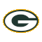

<!DOCTYPE html>
<html lang="pt-br">
<head>
    <meta charset="UTF-8">
    <meta http-equiv="X-UA-Compatible" content="IE=edge">
    <meta name="viewport" content="width=device-width, initial-scale=1.0, maximum-scale=1.0, user-scalable=no">
    <title>NFL Teams</title>
    <link rel="stylesheet" href="style.css">
    <link rel="stylesheet" href="https://unpkg.com/leaflet@1.7.1/dist/leaflet.css" 
    integrity="sha512-xodZBNTC5n17Xt2atTPuE1HxjVMSvLVW9ocqUKLsCC5CXdbqCmblAshOMAS6/keqq/sMZMZ19scR4PsZChSR7A==" crossorigin="" />
    <script src="https://unpkg.com/leaflet@1.7.1/dist/leaflet.js" 
    integrity="sha512-XQoYMqMTK8LvdxXYG3nZ448hOEQiglfqkJs1NOQV44cWnUrBc8PkAOcXy20w0vlaXaVUearIOBhiXZ5V3ynxwA==" crossorigin=""></script>
    <script src="teams.js"></script>
</head>
<body>
    <main id="mapa"></main>
    <aside id="informacoes">
        
        <p id="barra">TIMES DA NFL</p>
        <table>
            <tr>
                <thead>
                    <th>time</th>
                </thead>
                <td></td>
                <td>Green Bay Packers</td>
            </tr>
        </table>
    </aside>
    

    <script>
        const lat =  37.942555, lng = -95.711909;
        const zoom = 5;
        
        var map = L.map("mapa", {
            zoomControl: false,
            zoomSnap:0.25
        }).setView([lat,lng],zoom);
        
        var CartoDB_PositronNoLabels = L.tileLayer('https://{s}.basemaps.cartocdn.com/light_nolabels/{z}/{x}/{y}{r}.png', {
	    attribution: '&copy; <a href="https://www.openstreetmap.org/copyright">OpenStreetMap</a> contributors &copy; <a href="https://carto.com/attributions">CARTO</a>',
	    subdomains: 'abcd',
        }).addTo(map);
               
        
        // definir icones dos marcadores
        function getIcon(n) {
            return n == 'Baltimore Ravens'         ? 'logos/ravens.png' :
                   n == 'Cincinnati Bengals'       ? 'logos/bengals.png' :   
                   n == 'Cleveland Browns'         ? 'logos/browns.png' :
                   n == 'Pittsburgh Steelers'      ? 'logos/steelers.png' :
                   n == 'Houston Texans'           ? 'logos/texans.png' :
                   n == 'Indianapolis Colts'       ? 'logos/colts.png' :
                   n == 'Jacksonville Jaguars'     ? 'logos/jaguars.png' :
                   n == 'Tennessee Titans'         ? 'logos/titans.png' :
                   n == 'Buffalo Bills'            ? 'logos/bills.png' :
                   n == 'Miami Dolphins'           ? 'logos/dolphins.png' :
                   n == 'New England Patriots'     ? 'logos/patriots.png' :
                   n == 'New York Jets'            ? 'logos/jets.png' :
                   n == 'Denver Broncos'           ? 'logos/broncos.png' :
                   n == 'Kansas City Chiefs'       ? 'logos/chiefs.png' :
                   n == 'Las Vegas Raiders'        ? 'logos/raiders.png' :
                   n == 'Los Angles Charges'       ? 'logos/chargers.png' :
                   n == 'Chicago Bears'            ? 'logos/bears.png' :
                   n == 'Detroit Lions'            ? 'logos/lions.png' :
                   n == 'Green Bay Packers'        ? 'logos/packers.png' :
                   n == 'Minnesota Vikings'        ? 'logos/vikings.png' :
                   n == 'Atlanta Falcons'          ? 'logos/falcons.png' :
                   n == 'Carolina Panthers'        ? 'logos/panthers.png' :
                   n == 'New Orleans Saints'       ? 'logos/saints.png' :
                   n == 'Tampa Bay Buccaneers'     ? 'logos/buccaneers.png' :
                   n == 'Dallas Cowboys'           ? 'logos/cowboys.png' :
                   n == 'Philadelphia Eagles'      ? 'logos/eagles.png' :
                   n == 'New York Giants'          ? 'logos/giants.png' :
                   n == 'Washington Football Team' ? 'logos/washington.png' :
                   n == 'Arizona Cardinals'        ? 'logos/cardinals.png' :
                   n == 'Los Angles Rams'          ? 'logos/rams.png' :
                   n == 'San Francisco 49ers'      ? 'logos/49ers.png' :
                   n == 'Seattle Seahawks'         ? 'logos/seahawks.png' :            
                                                    'logos/nfl.png'
        }

        // criar o marcador com o icone
        function customizarIcone (feature, latlng) {
        let logo = L.icon({
            iconUrl: getIcon(feature.properties.name),
            iconSize: [60, 60],        
        })
        return L.marker(latlng, { icon: logo })
        }
       
        // variável com a customização do marcador 
       let LayerIcone = {pointToLayer: customizarIcone};

       // geojson com os times
       let allTeam = L.geoJSON(teams, LayerIcone).bindPopup(function(layer){
           return layer.feature.properties.name;
       }).addTo(map);

    </script>
</body>
</html>


